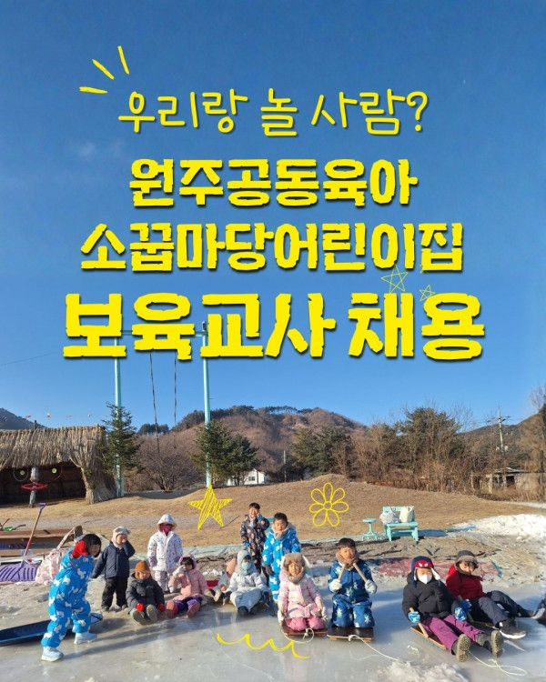

원주에서 하나뿐인 공동육아 어린이집,
<소꿉마당 어린이집>에서 함께 할 대체보육교사 한 분(1명)을 모십니다.
소꿉마당은
아이도 선생님도 행복한 어린이집을 꿈꿉니다.
계절의 변화를 느끼며 자연 속에서 살아갑니다.
교사와 부모 간에 상호 존중하는 문화가 있습니다.
아이도, 교사도, 부모도 함께 성장하기 위해 노력합니다.
*이런 분과 함께하고 싶어요!*
자연을 좋아하는 선생님
아이 중심, 놀이 중심 교육 철학에 공감하는 선생님
생태교육에 관심 있는 선생님
공동육아 어린이집이 궁금한 선생님
자세한 채용 안내는 아래를 참고 부탁드립니다.
<모집분야 및 자격>
• 모집대상: 보육교사 1명 (출산휴가 및 육아휴직 대체교사)
• 지원자격: 보육교사 자격증 소지자
<근무조건>
• 근무지역: 원주시 판부면 백운정윗길 14-35
• 근무기간: 2026년 11월 2일 ~ 2028년 1월 30일
• 근무시간: 09:00 ~ 18:00 (1시간 휴게시간)
• 급여 및 처우: 기본급 (2027년 최저시급에 따라 인상 예정), 4대보험, 퇴직금
<지원방법>
• 서류마감: 2026년 10월 20일 까지
• 메일접수: socoops@naver.com (대체교사채용_이름)
• 제출서류: 이력서(사진첨부) + 자기소개서 + 보육교사자격증(장기미종사자의 경우 교육이수증 첨부 필수)
<채용절차>
• 서류전형, 면접 등 어린이집 내부 채용 절차
• 문의: 소꿉마당어린이집 (033-766-0663) / [연락처 생략]
- 제출된 서류는 반환하지 않습니다.
- 불합격자에 대한 개별통보가 없는 점 양해 바랍니다.
- 기재내용이 사실과 다를 경우 채용이 취소될 수 있습니다.
- 실업수당 수급을 위한 허위 지원은 사양합니다.
자연 속에서 아이들과 즐겁게 함께 할 소중한 교사분을 기다립니다.
많은 지원 바랍니다.